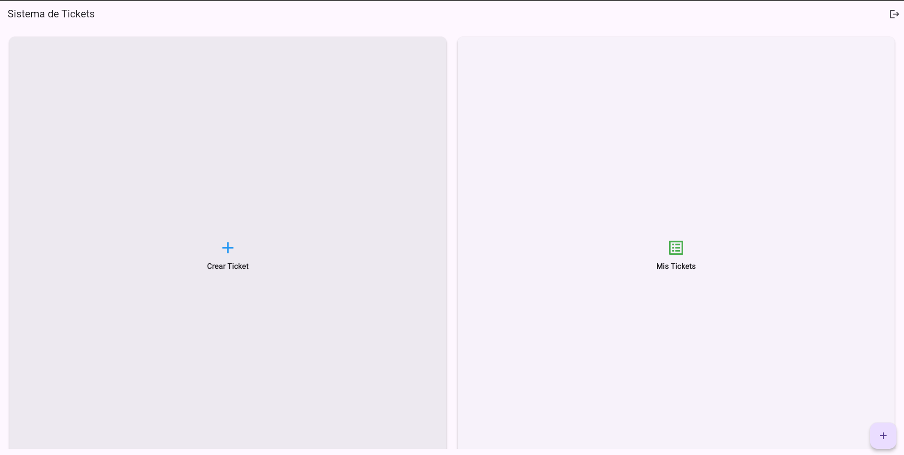
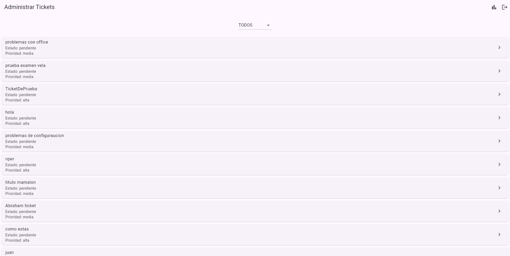

Este proyecto tiene como objetivo la creación de un sistema de soporte para gestionar tickets y generar reportes sobre el desempeño del equipo de soporte. El sistema consta de dos funcionalidades principales:
Utilizaremos el comando: flutter doctor para comprobar que tenemos todo disponible, si todos los prerequisitos están listos. Por ejemplo, Android studio. (tambien podemos usar flutter upgrade para actualizar Flutter o sus herramientas)
Y con el comando: flutter pub get Podremos cargar todo flutter correctamente y empezar
Historia de Usuario: Como usuario, quiero poder registrar un nuevo ticket con la información del problema, para solicitar soporte y recibir asistencia.
Detalles:
Al loguear como un usuario, podremos ver las diferentes opciones para gestionar nuestros tickets.

Con la opcion de crear ticket, crearemos nuestros tickets.
Historia de Usuario: Como administrador, quiero generar reportes sobre los tickets atendidos (por fecha, tipo de problema, agente), para analizar el desempeño del equipo de soporte.
Detalles:
Una vez que logueemos con usuario admin, entraremos a su interfaz.

En la esquina superior derecha, encontraremos la opcion de "Reporte"

Una vez alli podremos filtrar por fechas.

Y finalmente generaremos un reporte con los datos de los tickets filtrados.